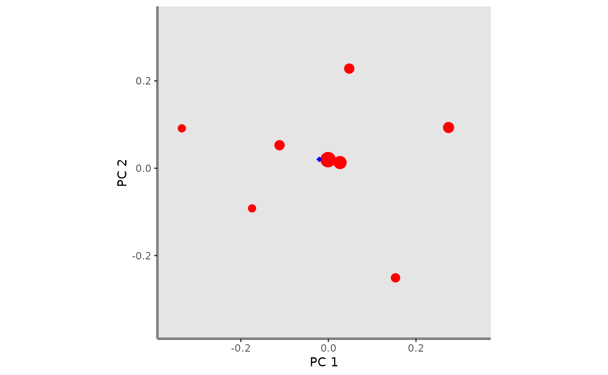

This plot fDiv indice for a given pair of functional axes and one or several assemblages. This function adds mean distance to center of gravity of vertices, points and vertices of 1:N assemblages on the background plot
Usage
fdiv.plot(
ggplot_bg,
asb_sp_coord2D,
asb_sp_relatw,
asb_vertices_nD,
asb_vertG_coord2D,
plot_sp = TRUE,
shape_sp,
color_sp,
fill_sp,
shape_vert,
color_vert,
fill_vert,
shape_vertG,
size_vertG,
color_vertG,
fill_vertG
)Arguments
- ggplot_bg
a ggplot object of the plot background retrieved through the
background.plotfunction.- asb_sp_coord2D
a list of matrix (ncol = 2) with coordinates of species present in each assemblage for a given pair of functional axes.
- asb_sp_relatw
a list of vector gathering species relative weight in each assemblage. It can be retrieved through the
alpha.fd.multidim.- asb_vertices_nD
a list (with names as in asb_sp_coord2D) of vectors with names of species being vertices in n dimensions.
- asb_vertG_coord2D
a list (with names as in asb_sp_coord2D) containing for each assemblage the coordinates of center of gravity of vertices for a given pair of axes
- plot_sp
a logical value indicating whether species of each assemblage should be plotted or not. Default:
plot_sp = TRUE.- shape_sp
a numeric value referring to the shape of the symbol used for species plotting if one assemblage to plot or a vector numeric values if several assemblages to plot. If more than one assemblage to plot, the vector should be formatted as: c(asb1 = "firstRshape", asb2 = "secondRshape", ...).
- color_sp
a R color name or an hexadecimal code referring to the color of species if one assemblage to plot or a vector of R color names or hexadecimal codes if several assemblages to plot. If more than one assemblage to plot, the vector should be formatted as: c(asb1 = "firstRcolorname", asb2 = "secondRcolorname", ...).
- fill_sp
a R color name or an hexadecimal code referring to the color of species symbol filling (if
shape_sp> 20) if one assemblage to plot or a vector of R color names or hexadecimal codes if several assemblages to plot. If more than one assemblage to plot, the vector should be formatted as: c(asb1 = "firstRcolorname", asb2 = "secondRcolorname", ...).- shape_vert
a numeric value referring to the shape of the symbol used for vertices plotting if one assemblage to plot or a vector numeric values if several assemblages to plot. If more than one assemblage to plot, the vector should be formatted as: c(asb1 = "firstRshape", asb2 = "secondRshape", ...).
- color_vert
a R color name or an hexadecimal code referring to the color of vertices if one assemblage to plot or a vector of R color names or hexadecimal codes if several assemblages to plot. If more than one assemblage to plot, the vector should be formatted as: c(asb1 = "firstRcolorname", asb2 = "secondRcolorname", ...). If color_vert = NA, vertices are not plotted (for shapes only defined by color, ie shape inferior to 20. Otherwise
fillmust also be set to NA).- fill_vert
a R color name or an hexadecimal code referring to the color of vertices symbol filling (if
shape_vert>20) if one assemblage to plot or a vector of R color names or hexadecimal codes if several assemblages to plot. If more than one assemblage to plot, the vector should be formatted as: c(asb1 = "firstRcolorname", asb2 = "secondRcolorname", ...). Iffill = NAandcolor = NA, vertices are not plotted (ifshape_vertsuperior to 20- shape_vertG
a numeric value referring to the shape to use to plot the center of gravity of vertices if one assemblage to plot or a vector numeric values if several assemblages to plot. If more than one assemblage to plot, the vector should be formatted as: c(asb1 = "firstRshape", asb2 = "secondRshape", ...).
- size_vertG
a numeric value referring to the size of the symbol used for the center of gravity of vertices if one assemblage to plot or a vector numeric values if several assemblages to plot. If more than one assemblage to plot, the vector should be formatted as: c(asb1 = "firstRsize", asb2 = "secondRsize", ...).
- color_vertG
a R color name or an hexadecimal code referring to the color of the center of gravity of vertices. if one assemblage to plot or a vector of R color names or hexadecimal codes if several assemblages to plot. If more than one assemblage to plot, the vector should be formatted as: c(asb1 = "firstRcolorname", asb2 = "secondRcolorname", ...).
- fill_vertG
a R color name or an hexadecimal code referring to the color to fill the center of gravity of vertices (if
shape_vert>20) if one assemblage to plot or a vector of R color names or hexadecimal codes if several assemblages to plot. If more than one assemblage to plot, the vector should be formatted as: c(asb1 = "firstRcolorname", asb2 = "secondRcolorname", ...).
Examples
# Load Species*Traits dataframe:
data("fruits_traits", package = "mFD")
# Load Assemblages*Species dataframe:
data("baskets_fruits_weights", package = "mFD")
# Load Traits categories dataframe:
data("fruits_traits_cat", package = "mFD")
# Compute functional distance
sp_dist_fruits <- mFD::funct.dist(sp_tr = fruits_traits,
tr_cat = fruits_traits_cat,
metric = "gower",
scale_euclid = "scale_center",
ordinal_var = "classic",
weight_type = "equal",
stop_if_NA = TRUE)
#> [1] "Running w.type=equal on groups=c(Size)"
#> [1] "Running w.type=equal on groups=c(Plant)"
#> [1] "Running w.type=equal on groups=c(Climate)"
#> [1] "Running w.type=equal on groups=c(Seed)"
#> [1] "Running w.type=equal on groups=c(Sugar)"
#> [1] "Running w.type=equal on groups=c(Use,Use,Use)"
# Compute functional spaces quality to retrieve species coordinates matrix:
fspaces_quality_fruits <- mFD::quality.fspaces(sp_dist = sp_dist_fruits,
maxdim_pcoa = 10,
deviation_weighting = "absolute",
fdist_scaling = FALSE,
fdendro = "average")
# Retrieve species coordinates matrix:
sp_faxes_coord_fruits <- fspaces_quality_fruits$details_fspaces$sp_pc_coord
# Set faxes limits:
# set range of axes if c(NA, NA):
range_sp_coord_fruits <- range(sp_faxes_coord_fruits)
range_faxes_lim <- range_sp_coord_fruits +
c(-1, 1)*(range_sp_coord_fruits[2] -
range_sp_coord_fruits[1]) * 0.05
# Retrieve the background plot:
ggplot_bg_fruits <- mFD::background.plot(
range_faxes = range_faxes_lim,
faxes_nm = c("PC 1", "PC 2"),
color_bg = "grey90")
# Retrieve the matrix of species coordinates for "basket_1" and PC1 and PC2
sp_filter <- mFD::sp.filter(asb_nm = "basket_1",
sp_faxes_coord = sp_faxes_coord_fruits,
asb_sp_w = baskets_fruits_weights)
fruits_asb_sp_coord_b1 <- sp_filter$`species coordinates`
fruits_asb_sp_coord2D_b1 <- fruits_asb_sp_coord_b1[, c("PC1", "PC2")]
# Use alpha.fd.multidim() function to get inputs to plot FDiv:
alpha_fd_ind <- mFD::alpha.fd.multidim(
sp_faxes_coord = sp_faxes_coord_fruits[ , c("PC1", "PC2", "PC3", "PC4")],
asb_sp_w = baskets_fruits_weights,
ind_vect = c("fdiv"),
scaling = TRUE,
check_input = TRUE,
details_returned = TRUE)
#> basket_1 done 10%
#> basket_2 done 20%
#> basket_3 done 30%
#> basket_4 done 40%
#> basket_5 done 50%
#> basket_6 done 60%
#> basket_7 done 70%
#> basket_8 done 80%
#> basket_9 done 90%
#> basket_10 done 100%
# Retrieve inputs of the fdiv.plot() function for "basket_1" and PC1, PC2
# ... through alpha.fd.multidim outputs:
fruits_asb_sp_relatw_b1 <-
alpha_fd_ind$details$asb_sp_relatw["basket_1", ]
fruits_asb_vertices_nD_b1_2D <-
alpha_fd_ind$details$asb_vert_nm["basket_1"]
fruits_asb_vertG_coord_b1 <-
alpha_fd_ind$details$asb_G_coord["basket_1"]
fruits_asb_vertG_coord_b1_2D <-
fruits_asb_vertG_coord_b1[[1]][c("PC1", "PC2")]
# Retrieve FDiv plot:
fdiv_plot <- fdiv.plot(
ggplot_bg = ggplot_bg_fruits,
asb_sp_coord2D = list(basket_1 = fruits_asb_sp_coord2D_b1),
asb_sp_relatw = list(basket_1 = fruits_asb_sp_relatw_b1),
asb_vertices_nD = fruits_asb_vertices_nD_b1_2D,
asb_vertG_coord2D = list(basket_1 = fruits_asb_vertG_coord_b1_2D),
plot_sp = TRUE,
shape_sp = 16,
color_sp = c(basket_1 = "red"),
fill_sp = "red",
color_vert = "red",
fill_vert = "red",
shape_vert = 16,
shape_vertG = list(basket_1 = 18),
size_vertG = list(basket_1 = 2),
color_vertG = list(basket_1 = "blue"),
fill_vertG = list(basket_1 = "blue"))
fdiv_plot
